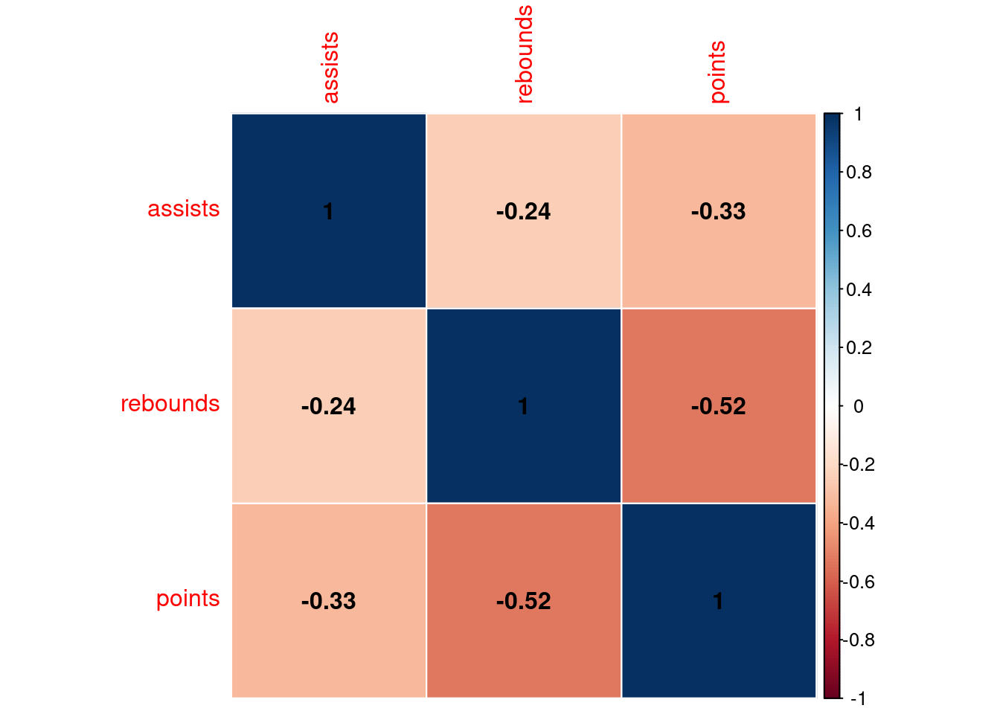

#create data frame
df <- data.frame(assists=c(4, 5, 5, 6, 7, 8, 8, 10),
rebounds=c(12, 14, 13, 7, 8, 8, 9, 13),
points=c(22, 24, 26, 26, 29, 32, 20, 14))1 Assignment 1
1.1 About Me
Hi! I am Yaser. After working as a production and planning engineer in different sectors such as automotive, rubber and packaging, currently I am working in a company that monitors and collects global sports data. The project I am responsible for in the company is to list the details obtained by performing analyzes by shooting, game type and game situation, and the collected data is made available to basketball federations, coaches and players. I have been personally interested in data science topics for over two years outside of business life. What interests me most about data science is its capability of creating the future and changing traditional approaches inevitably in different areas. My primary goal for the future works is to use the experience I have gained in production processes as domain knowledge and to work on data-driven projects in the production sector by combining them with the knowledge I will obtain in MEF Big Data Analytics Program.

1.2 rstudio::conf(2022) Advocating for Automation
In this session of the conference, Hannah Podzorski talks about how to use R to automate workflows. Automation provides advantages such as reproducibility, simplicity, time saving and less human interaction in processes.
She mentions two important R packages she uses. First one was {openxlsx}. It designed to edit, read, edit Excel files in R. Other R package she mentioned is {officer} that allows manipulate Word documents and PowerPoint documents in R. She uses it mostly for exporting ggplot to PowerPoint. She shows that adjustments can be made easily with the {officer} on a graph showing the change of chlorine concentration by time.
In a part of her presentation she talks about her team had decided to automate a software named ProUCL that is a statistical software package for analysis of environmental data sets with and without nondetect observations. It developed by the U.S. Environmental Protection Agency (EPA). It shows that they automate the software with mini mouse macros using appropriate functions in R environment. It is generally mentioned that process automations reduce human errors and save time in the presentation. And it seems like how all of this is possible with R.
Source: https://www.rstudio.com/conference/2022/talks/advocating-for-automation/
1.3 R Posts
Following section are about 3 R posts relevant to my interests.
1.3.1 Audio Classification in R
Not long ago, I have worked on a deep learning project in which urban sounds could be classified with the CNN model as part of a bootcamp and I have run the project in Python environment. You can check it by clicking here. So how to advance such a project in the R environment?
In fact, the basic logic in such a project is to visualize the spectral features of the sound, which extracts the frequency and power characteristics and then to classify the extracted features as in image processing techniques.
You can see the details at the link below.
Blog post: https://blogs.rstudio.com/ai/posts/2018-06-06-simple-audio-classification-keras/
1.3.2 How to Create a Correlation Matrix in R
We know the correlation matrix as a table of correlation coefficients that shows whether there is a relationship between a set of data. It is a powerful tool to summarize a large dataset and to identify and visualize patterns in the given data.
The following 4 different methods of creating a correlation matrix are described in the blog.
- The
corFunction (For getting simple matrix of correlation coefficients) - The
rcorrFunction (For getting p-values of correlation coefficients) - The
corrplotFunction (For visualizing correlation matrix) - The
ggcorrplotFunction (For visualizing correlation matrix)
#view dataframe
df assists rebounds points
1 4 12 22
2 5 14 24
3 5 13 26
4 6 7 26
5 7 8 29
6 8 8 32
7 8 9 20
8 10 13 14Let’s look at the correlation matrix that shows the correlation coefficients between each variable in the data.
#create correlation matrix
cor(df) assists rebounds points
assists 1.0000000 -0.2448608 -0.3295730
rebounds -0.2448608 1.0000000 -0.5220917
points -0.3295730 -0.5220917 1.0000000The corrplot and ggcorrplot packages make it easy to visualize directly.
install.packages("corrplot")Installing package into '/home/yaser/R/x86_64-pc-linux-gnu-library/4.2'
(as 'lib' is unspecified)library(corrplot)corrplot 0.92 loaded#visualize correlation matrix
corrplot(cor(df), method = "color", type="full", addgrid.col = "white",
addshade = "positive", addCoef.col = "black")
Blog Post: https://www.statology.org/correlation-matrix-in-r/
1.3.3 Using dplyr with Databases
In addition to working with data in local memory stored in dataframes, dplyr also works with data on a remote disk stored in a database.
This is especially useful in two scenarios:
- Your data is already in the database.
- There is too much data to fit all in memory at once and you must use an external storage mechanism.
dbplyr package is needed to use databases with dplyr.
install.packages("dbplyr")Installing package into '/home/yaser/R/x86_64-pc-linux-gnu-library/4.2'
(as 'lib' is unspecified)Also, DBI backend package is required. The DBI package provides a common interface that allows dplyr to work with different databases using the same code. If it is not already installed, it is automatically installed with the dplyr package.
1.3.3.1 Connecting to Database
Using DBI::dbConnect() we can work with databases. The first argument will be the database backend we want to connect to. Five commonly used backends are:
RMySQL connects to MySQL and MariaDB
RPostgreSQL connects to Postgres and Redshift.
RSQLite embeds a SQLite database.
odbc connects to many commercial databases via the open database connectivity protocol.
bigrquery connects to Google’s BigQuery.
library(dplyr)
con <- DBI::dbConnect(RSQLite::SQLite(), path = ":dbname:")There are simple code blocks for connecting to database in the rest of the blog post. It seems possible to do this with R codes without having to master the SQL syntax.
con <- DBI::dbConnect(RMySQL::MySQL(),
host = "database.rstudio.com",
user = "hadley",
password = rstudioapi::askForPassword("Database password")
)
1.3.3.2 Generating Queries
dplyr prepares the SQL queries itself, but it is still important to know the SQL language at a basic level.
There is an example below about how to use SQL statements with it.
flights_db %>% select(year:day, dep_delay, arr_delay)
flights_db %>% filter(dep_delay > 240)
flights_db %>%
group_by(dest) %>%
summarise(delay = mean(dep_time))Blog Post: https://solutions.rstudio.com/db/r-packages/dplyr/